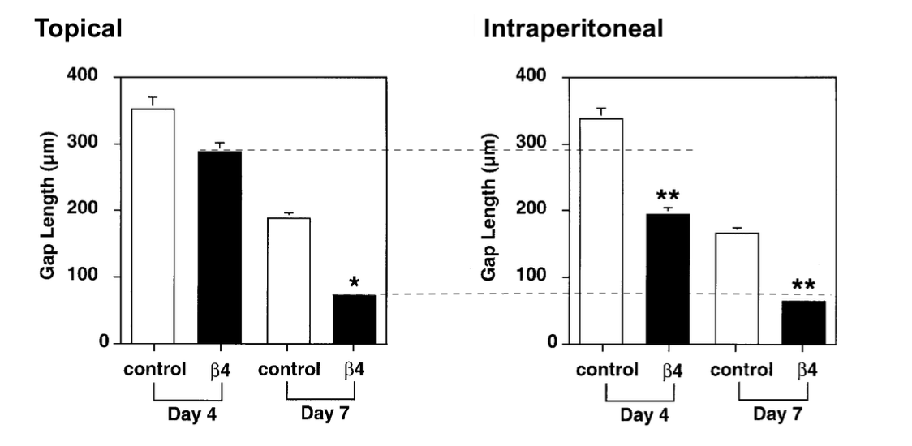
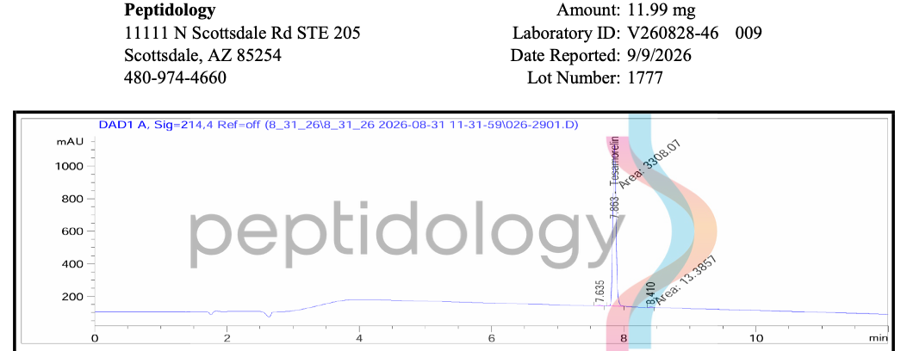
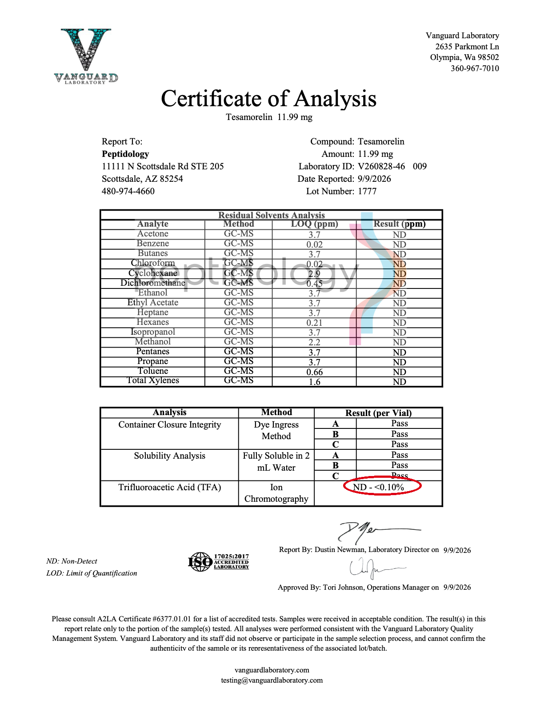
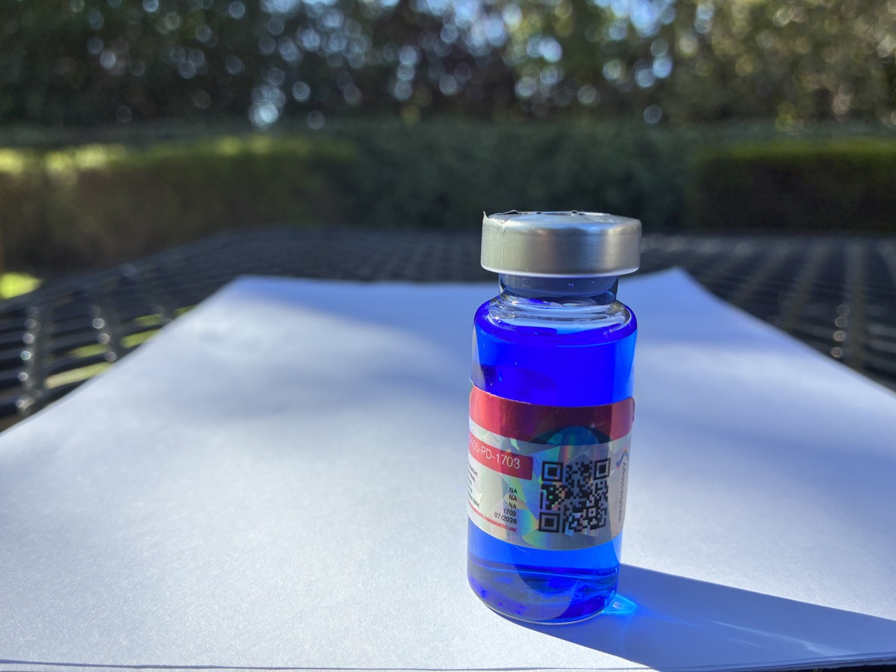

In rodents, BPC-157, Tβ4, and GHK-Cu improve healing. Subcutaneous injection is systemic, so the reasoning goes that that should work in humans, and many report that it does.
This article argues for injecting at the injury itself, to carefully put more of the dose where it is needed, for better expected healing and less systemic spillover.
It also covers what to buy, what to look for on the Certificate of Analysis (COA), and how to build a recovery program around other peptides, nutrition, and exercise.
Injecting 🔗
Local injection through a fine, sharp, sterile needle delivers the dose to the injury with minimal scarring. Use a thick needle to draw and a 30g or finer to inject.
Finer needles create less damage, for less scarring, fibrotic adhesion and better healing. A 33 gauge needle damages nearly 60% less tissue than a 30 at the same depth. Anything an inch or deeper needs a longer needle, available only in 30 gauge or coarser — a bigger hole, more scarring, fewer passes.
For tendon problems, injecting near either end (its adjoining muscle or bony attachment) reaches its blood supply but clears fast. Injecting near the tendon’s midpoint drains slowly, but can be hard to hit blind (unguided), and risks touching (and scarring) the tendon. Both should still beat a systemic subcutaneous dose.
Concentrated GHK-Cu stings. A more dilute reconstitution reduces the sting.
A closer look at human subcutaneous injection 🔗
Human subcutaneous doses leave the site to enter circulation, dispersing through the organism, with a fraction reaching the injured tissue through its blood supply.
Humans are roughly two orders of magnitude heavier than rats, with liters rather than milliliters of blood and centimeter rather than millimeter delivery paths to sparsely vascularized tendons.
Injecting SC over the injury does not change the delivery problem. Some of the dose is broken down locally, and the rest drains into capillaries and lymphatics and goes systemic, reaching the injury only as a small circulating fraction. If the injectate is below the SC fat, some might reach the deep fascia and the muscle just beneath it.
Local injection starts in the target tissue, before systemic dilution. How much that advantage matters depends on the peptide.
BPC-157 🔗
How it works
BPC-157 upregulates growth hormone receptor (GHR) [Chang, 2014] and vascular endothelial growth factor receptor (VEGFR2) [Hsieh, 2017]. This makes the tissue more responsive to its own repair signals, and healing occurs for days following clearance [Mateescu, 2026].
GHR activation drives collagen production, and VEGF drives the new vessels that bring nutrients, growth factors, and macrophages and carry waste away. If expression tracks concentration, raising concentration at the tendon raises that responsiveness there.
BPC-157 facilitates the repair that makes inflammation go away [Vasireddi, 2025], [Yıldırım, 2026]. As the repair clears and rebuilds the tissue, the inflammation resolves with the damage that drove it. NSAIDs can interfere with that repair signaling [Cohen, 2006].
Why local
Systemic doses depend on blood carrying the peptide to the target intact.
Rats’ short circulation paths and fast heart rate (about 300 beats/min) probably shorten BPC-157 delivery time, helping more of the dose reach injuries before clearance, given its roughly 15-minute plasma half-life. Unsurprisingly, research shows intraperitoneal BPC-157 works in rats for tendon [Staresinic, 2003] and tendon-to-bone healing [Krivic, 2006].
Intramuscular (IM) injection gets the full dose to the target instantly, with low systemic spillover — just 14–19% in rats and 45–51% in dogs [He, 2022].
How long, and how often?
Twice daily is a practical floor for BPC-157, not an optimum. Its half-life is 5-15 minutes in rats and beagles [He, 2022], possibly longer in humans, and the GHR upregulation behind its tendon effect builds with sustained exposure, still rising at day three in cultured rat tendon fibroblasts [Chang, 2014]. A single daily shot leaves the receptor unstimulated for most of the day, so if that pattern holds in tissue, frequent dosing approximates it better than one large dose.
After IM injection, blood BPC-157 was undetectable by four hours [He, 2022]. Its concentration and persistence at the injury remain unmeasured.
Blind injections can miss the target. Small injections might be effective in vitro, but decrease the odds of reaching it. More frequent injections can improve those odds and should also keep local GHRs upregulated. But injections damage and scar tissue, and larger doses increase systemic spillover, so more isn’t better.
Dosing can go with events that support repair. Training raises local perfusion, adds mechanical stimulus, and raises GH; hot showers increase perfusion (and cleanse the skin). GH also rises around sleep and acts through the GHR BPC-157 upregulates.
Dose
The BPC-157 dose shown here is 400–1000 µg a day, split across 2–4 injections. This wide range is based on conventional dosing, animal pharmacokinetics, GHR turnover, injury type and severity, rather than measured healing outcomes in humans.
Cancer risk
BPC-157 promotes angiogenesis [Hsieh, 2017], and upregulates GHR [Chang, 2014]. If it circulates beyond the injury, it could support hidden tumors.
GH Secretagogues 🔗
GH secretagogues like tesamorelin or GRF (1-29) benefit the upregulated GH receptors. This also raises systemic IGF-1, which is associated with higher cancer risk. These peptides act on the anterior pituitary and should not be locally injected.
Thymosin beta-4 vs "TB-500" 🔗
Thymosin beta-4 (Tβ4) is a 43-amino-acid protein, but "TB-500" is just a market name usually representing a seven-amino-acid fragment of it, occasionally Tβ4 itself. Nearly all the evidence, human trials and pharmacokinetics included, is for Tβ4 [McGuire, 2026]. The fragment is a different molecule with a fraction of Tβ4’s mass, so evidence for Tβ4 cannot be assumed to apply to TB-500.
The one controlled test of the fragment, in vitro, found it inactive and traced the wound-healing activity to a metabolite that appears only at low levels in rats [Rahaman, 2024].
[Biçer, 2026] is the only controlled tendon study of TB-500, giving rats 60 µg/kg/day intraperitoneally for four weeks after Achilles transection and Kessler repair. TB-500 raised maximum load to failure and improved histological scores versus controls, and adding BPC-157 gave no further benefit, possibly limited by the four-week window. But the paper identifies the product only as Peptide Sciences TB-500 (27-155-PS), and that supplier sold both the full protein and the fragment, so which one was tested is unknown.
Tβ4 systemic vs local and mechanism of action
Local administration works. [Xu, 2013] found that 1 µg of Tβ4 in fibrin, placed into a transected rat medial collateral ligament, improved collagen organization and biomechanics compared with fibrin alone.
[Malinda, 1999] compared topical and intraperitoneal Tβ4 in a full-thickness rat skin-wound model, measuring local versus systemic administration. Five µg applied locally just twice produced at least the same healing effect, with increased collagen deposition and angiogenesis, as 60 µg injected intraperitoneally every other day for seven days, despite using only about 4% as much Tβ4 cumulatively, with significant effects evident by day 4.

Tβ4 acts where it is placed. It binds G-actin, the soluble actin that cells assemble into filaments to change shape and move, and that binding drives the migration of endothelial cells that form new blood vessels. In muscle it also draws in myoblasts, since injured fibers and nearby immune cells raise local Tβ4 and myoblasts, including those from satellite cells, move toward it, shown in mice and cell culture [Tokura, 2011]. Delivering it into the injury is therefore the most direct route. That topical delivery matched or beat the far larger systemic dose casts doubt on any injury-homing mechanism from systemic administration.
One mechanism often credited to Tβ4 does not apply here. The anti-fibrotic peptide Ac-SDKP forms only where the enzyme meprin-α is active, in the kidney and gut and not in tendon, ligament, or muscle [Kumar, 2016].
The risk
Thymosin beta-4 promotes cell migration, angiogenesis, and anti-apoptotic signaling, all of which can also support tumor growth and metastasis. Local injection offers a more precise approach to get more of it to the target tissue at a more conservative dose, with less systemic exposure.
Dose
Community reports make TB-500 worth investigating. No safety data of any kind, thin evidence in the parent molecule Tβ4, and known risks, yielding a poor risk-reward ratio.
That poor ratio is why the blend holds the least TB-500, about 0.2 mg a day, or 1.4 mg a week, below the 2 to 5 mg a week common in community use. The common "Wolverine" blend of BPC-157 and TB-500 gives as much of this weakest, riskiest peptide as the well-supported one, the opposite of what the evidence supports.
GHK-Cu 🔗
GHK-Cu is a naturally occurring copper tripeptide of glycine (G), histidine (H), and lysine (K). It promotes wound healing, attraction of immune cells, antioxidant and anti-inflammatory effects, collagen and GAG synthesis, blood vessels growth. Human plasma of 20 year-olds contains about 200 ng/ml GHK-Cu. By age 60, that level drops to ~80 ng/ml.
GHK-Cu signals repair and supplies a material used for it, copper. Copper is the cofactor lysyl oxidase uses to cross-link collagen and elastin into the load-bearing fibrils that give healed tissue its strength. Its signaling adds to that — pro-collagen, pro-angiogenic, and anti-inflammatory — shown in skin and wounds and relevant to repairing muscle, fascia, and tendon [Pickart & Margolina, 2018].
Delivery of GHK-Cu is key, and most of the research is local, rather than systemic. GHK-Cu binds to blood proteins, so a systemic dose is diluted and bound as it circulates, possibly some of it reaching the injury. Effects scale with concentration, and local injection puts it at the site, uncomplicated by perfusion and binding proteins.
Unlike TB-500, the evidence for GHK-Cu is strong, and matches the known mechanism. Applied to rat wound chambers, GHK-Cu raised collagen, total protein, DNA, and glycosaminoglycans in proportion to concentration [Maquart, 1993], and injected into the joint after ACL reconstruction it improved graft stiffness and knee laxity at six weeks, though the gain was gone by twelve [Fu, 2015]. Systemic evidence for GHK-Cu is thinner, but weekly intraperitoneal GHK-Cu at 2 mg/kg preserved muscle mass, fiber size, and grip strength in mice with cigarette-smoke-induced wasting [Deng, 2023].
Dose
The GHK-Cu dose shown here is about 0.5–1 mg a day. [Maquart, 1993] found a dose-dependent increase in collagen accumulation with 0.5–2 mg GHK-Cu per injection into rat wound chambers, given every three days. Daily topical GHK-Cu also accelerated healing of ischemic skin wounds in rats [Canapp, 2003].
GHK-Cu is about 16% copper by mass, so 1 mg carries roughly 160 µg of copper, under a fifth of the recommended dietary intake. [Zhang, 2022] gave mice a human-equivalent near 130 mg for emphysema, over a hundred times the amount shown here, though that study did not assess toxicity.
Checking the COA 🔗
Products sold for research use are not made for human injection, and some have been reported as contaminated — an independent test of ten vials, BPC-157 and GHK-Cu among them, found several with low purity, endotoxin, and heavy metals. Ask for a certificate of analysis covering identity, purity, and endotoxin before buying.
The Certificate of Analysis (COA) tells you what you have, and two lines matter most. One is mass — "TB-500" is sold both as full-length Tβ4 and the shorter fragment, and only the mass tells them apart. The other is residual trifluoroacetic acid (TFA), which the COA should report as a low, quantified number.
COAs must be from verified third-party facilities (Janoshik, Vanguard Laboratory, Freedom Diagnostics, etc.), and signed with a verifiable Task/Report ID. Vendor-generated PDFs and website claims are insufficient. You must be able to verify the COA .

Residual TFA
Peptides purified with TFA are TFA salts, and standard research peptides can retain 10%–30%+ TFA by weight. That TFA counts in the labeled weight, so less of the vial is actual peptide. It also shortens the shelf life of the reconstituted solution, and it damages tissue at the injection site. Source from suppliers whose third-party COA reports the net peptide content and residual TFA under 0.5%.

Dosing and local injection protocol summary 🔗
This experimental blend combines all three peptides in 2–4 daily injections to renew BPC-157 exposure as it clears [He, 2022]. The blend’s efficacy, safety, and dosing are unestablished in humans.
Making the blend
The 5:4:1 blend is prepared in two 10 mL vials. It uses half of the GHK-Cu and TB-500 source vials, leaving the remainder for another batch.
Materials
- About 22 mL of bacteriostatic water (e.g., BAC Water Depot; not an affiliate link)
- A 50 mg vial of GHK-Cu
- Two 10 mg vials of BPC-157
- A 10 mg vial of TB-500
- Two sterile empty 10 mL vials
- A 3 mL syringe for mixing
- Alcohol swabs
Preparation
Sterile technique: a clean preparation area, disinfected vial stoppers, and sterile needles, syringes, and receiving vials.
- Reconstitute each peptide vial in 2 mL of water, swirling to dissolve (about a minute).
- Add 0.5 mL of GHK-Cu solution (12.5 mg) to the first blend vial.
- Add all 2 mL from one BPC-157 vial (10 mg).
- Add 0.5 mL of TB-500 solution (2.5 mg).
- Rinse the emptied BPC-157 vial with a little bacteriostatic water and transfer the rinse into the same blend vial.
- Add bacteriostatic water to bring the total volume to 10 mL, including the peptide solutions and rinse water.
- Repeat for the second blend vial, using the other BPC-157 vial.
Each vial holds 12.5 mg GHK-Cu, 10 mg BPC-157, and 2.5 mg TB-500 — the 5:4:1 blend at 1.25, 1.0, and 0.25 mg/mL. Refrigerate both, along with the leftover GHK-Cu and TB-500 for the next batch, and finish one before opening the second.
The dose
| GHK-Cu | BPC-157 | TB-500 | |
|---|---|---|---|
| In the blend (20 mL) | 25 mg | 20 mg | 5 mg |
| Concentration | 1.25 mg/mL | 1.0 mg/mL | 0.25 mg/mL |
| Per day | 1.0 mg | 0.80 mg | 0.20 mg |
| Daily draw | 80 units (0.80 mL), split into 2–4 injections of 20–40 units | ||
| Basis | Rat wound studies [Maquart], [Canapp] | GHR turnover + fast clearance | Guess — no fragment dose data |
Each injection is 20 to 40 units, large enough that a one-unit slip on the syringe is only a few percent. The two 10 mL vials last about 25 days together, roughly twelve each. The 40 unit injection supplies 0.5 mg GHK-Cu, and at the given 1.25 mg/mL concentration, it does not sting.

Why not GLOW?
GLOW typically blends 50 mg GHK-Cu, 10 mg BPC-157, and 10 mg TB-500, using the shorter TB-500 fragment. The fixed ratio is way off — BPC-157 at 25% and TB-500 at 100%.
Peptides are signals, not substrates 🔗
These peptides provide repair signals. GHK-Cu also supplies copper, an essential cofactor for lysyl oxidase and collagen cross-linking. Repair also requires the substrates and cofactors needed to build connective tissue, including amino acids found in collagen peptides and vitamin C. Hyaluronic acid contributes to the extracellular matrix and repair process.
For connective-tissue repair, 15 g of gelatin or collagen peptides with about 50 mg of vitamin C 30–60 minutes before exercise and loading supplies collagen-specific amino acids (gelatin) when synthesis is being stimulated [Shaw, 2017]. Oral hyaluronic acid at about 100–200 mg/day can support connective-tissue hydration and viscoelasticity during repair [Oliva, 2021].
What local delivery does and does not establish 🔗
To date, the human dose-response curve for BPC administration is unmeasured, and no study has measured local versus systemic tissue exposure in musculoskeletal injury. Site injection puts more of each dose at the injury and less everywhere else.
References
[Chang, 2014] Pentadecapeptide BPC 157 enhances the growth hormone receptor expression in tendon fibroblasts, Chang CH, Tsai WC, Hsu YH, Pang JS. Molecules 2014;19(11):19066-77. (Full text)
[Hsieh, 2017] Therapeutic potential of pro-angiogenic BPC157 is associated with VEGFR2 activation and up-regulation, Hsieh MJ, Liu HT, Wang CN, et al. Journal of Molecular Medicine 2017;95(3):323-33. (Abstract)
[Mateescu, 2026] BPC-157 as an investigational peptide therapeutic: biopharmaceutical challenges, formulation strategies, and translational development barriers, Mateescu DM, Gavrilescu DM, Constantinescu FE, et al. Pharmaceutics 2026;18(5):625. (Open access)
[Vasireddi, 2025] Emerging use of BPC-157 in orthopaedic sports medicine: a systematic review, Vasireddi N, Hahamyan H, Salata MJ, et al. HSS Journal 2025. (Full text)
[Yıldırım, 2026] Protective effects of BPC 157 in rats with experimentally induced lower extremity ischemia-reperfusion injury, Yıldırım AK, Demirtaş H, Özer A, Arslan M. Scientific Reports 2026;16:24375. (Full text)
[Cohen, 2006] Indomethacin and celecoxib impair rotator cuff tendon-to-bone healing, Cohen DB, Kawamura S, Ehteshami JR, Rodeo SA. American Journal of Sports Medicine 2006;34(3):362-369. (Abstract)
[Staresinic, 2003] Gastric pentadecapeptide BPC 157 accelerates healing of transected rat Achilles tendon and in vitro stimulates tendocytes growth, Staresinic M, Sebecic B, Patrlj L, et al. Journal of Orthopaedic Research 2003;21:976-83. (Abstract)
[Krivic, 2006] Achilles detachment in rat and stable gastric pentadecapeptide BPC 157, Krivic A, Anic T, Seiwerth S, Huljev D, Sikiric P. Journal of Orthopaedic Research 2006;24:982-9. (Abstract) Full-text PDF (public copy).
[He, 2022] Pharmacokinetics, distribution, metabolism, and excretion of body-protective compound 157, a potential drug for treating various wounds, in rats and dogs, He L, Feng D, Guo H, et al. Frontiers in Pharmacology 2022;13:1026182.
[McGuire, 2026] Thymosin beta-4 and TB-500 in tissue healing, regeneration, and musculoskeletal repair: a scoping review, McGuire F, Hughes E, Maak T, Cushman DM. Applied Sciences 2026;16(12):6202. (Open access)
[Rahaman, 2024] Simultaneous quantification of TB-500 and its metabolites in in-vitro experiments and rats by UHPLC-Q-Exactive orbitrap MS/MS and their screening by wound healing activities in-vitro, Rahaman KA, Muresan A, Min H, et al. Journal of Chromatography B 2024;1235:124033. (Abstract)
[Biçer, 2026] Effects of BPC-157 and TB-500 on Achilles tendon healing in rats: A histopathological and biomechanical study, Biçer O, Adanir O, Güleryüz Y, et al. Joint Diseases and Related Surgery 2026;37(3):822-37.
[Xu, 2013] Thymosin beta4 enhances the healing of medial collateral ligament injury in rat, Xu B, Yang M, Li Z, et al. Regulatory Peptides 2013;184:1-5.
[Malinda, 1999] Thymosin beta4 accelerates wound healing, Malinda KM, Sidhu GS, Mani H, et al. Journal of Investigative Dermatology 1999;113:364-8. (Abstract; publisher full-text link)
[Tokura, 2011] Muscle injury-induced thymosin β4 acts as a chemoattractant for myoblasts, Tokura Y, Nakayama Y, Fukada S, et al. Journal of Biochemistry 2011;149(1):43-48. (Abstract)
[Kumar, 2016] The anti-inflammatory peptide Ac-SDKP is released from thymosin-β4 by renal meprin-α and prolyl oligopeptidase, Kumar N, Nakagawa P, Janic B, et al. American Journal of Physiology-Renal Physiology 2016;310(10):F1026-F1034. (Full text)
[Pickart & Margolina, 2018] Regenerative and protective actions of the GHK-Cu peptide in the light of the new gene data, Pickart L, Margolina A. International Journal of Molecular Sciences 2018;19(7):1987.
[Maquart, 1993] In vivo stimulation of connective tissue accumulation by the tripeptide-copper complex glycyl-L-histidyl-L-lysine-Cu2+ in rat experimental wounds, Maquart FX, Bellon G, Chaqour B, et al. Journal of Clinical Investigation 1993;92(5):2368-76.
[Fu, 2015] Tripeptide-copper complex GHK-Cu (II) transiently improved healing outcome in a rat model of ACL reconstruction, Fu SC, Cheuk YC, Chiu WYV, et al. Journal of Orthopaedic Research 2015;33(7):1024-33. (Abstract) Full-text PDF (public copy).
[Deng, 2023] Glycyl-L-histidyl-L-lysine-Cu²⁺ rescues cigarette smoking-induced skeletal muscle dysfunction via a sirtuin 1-dependent pathway, Deng M, Zhang Q, Yan L, et al. Journal of Cachexia, Sarcopenia and Muscle 2023;14(3):1365-1380. (Full text)
[Canapp, 2003] The effect of topical tripeptide-copper complex on healing of ischemic open wounds, Canapp SO, et al. Veterinary Surgery 2003;32(6):515-523. (Abstract)
[Zhang, 2022] Glycyl-L-histidyl-L-lysine-Cu²⁺ attenuates cigarette smoke-induced pulmonary emphysema and inflammation by reducing oxidative stress pathway, Zhang Q, Yan L, Lu J, Zhou X. Frontiers in Molecular Biosciences 2022;9:925700. (Full text)
[Shaw, 2017] Vitamin C-enriched gelatin supplementation before intermittent activity augments collagen synthesis, Shaw G, Lee-Barthel A, Ross MLR, et al. American Journal of Clinical Nutrition 2017;105(1):136-143. (Full text)
[Oliva, 2021] The impact of hyaluronic acid on tendon physiology and its clinical application in tendinopathies, Oliva F, Marsilio E, Asparago G, et al. Cells 2021;10(11):3081. (Full text)